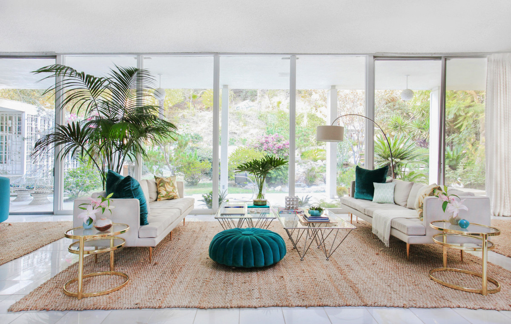
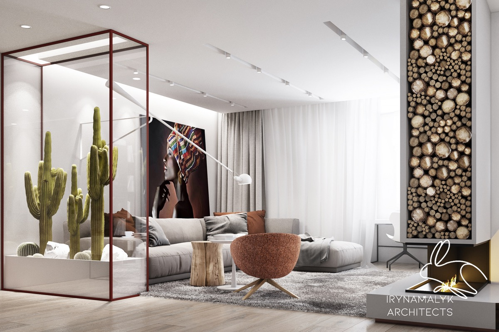
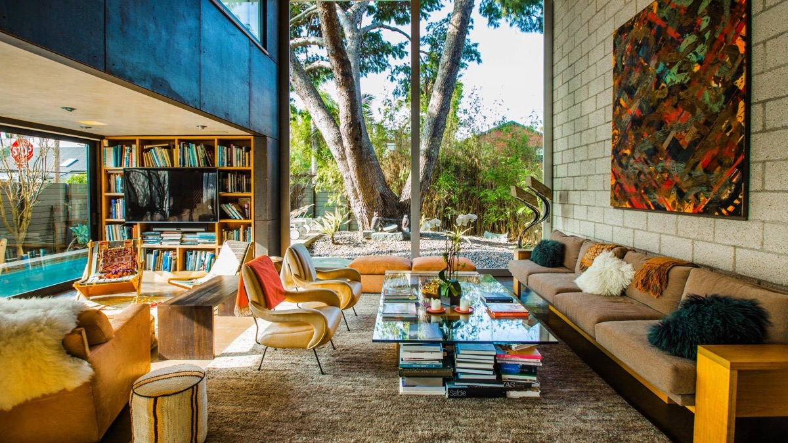

Arty and amazing, each one of these 51 bedroom designs is unique in creative approach. Whether it be a huge piece of modern art.
A place of relaxation and intimate get-togethers, the living room is a hub in the home that deserves top design priority. Get inspired with our curated collection of beautiful living rooms that feature everything from modern minimalist lofts to luxury ocean side showrooms. Whether you’re looking to switch up your living room's color scheme or planning on a complete reno, this modern living room collection is just what the design doctor ordered! Filled with a variety of décor styles, living room layouts, modern color palettes, unique furniture and much more, you are sure to find something to inspire your next living room project.
Mid-Century Modern gets adorned with a pinch of Art Deco flair in this fresh and vibrant living room. The mix of turquoise textiles with simplistic furniture, like the mid century modern coffee tables, is absolutely divine.
From the oversized cactus terrarium to the log motif accent wall, Mother Nature undoubtedly played a large role in inspiring this beautiful living room. The abundance of natural light beaming in through the expansive window is truly the cherry on top of this striking design.